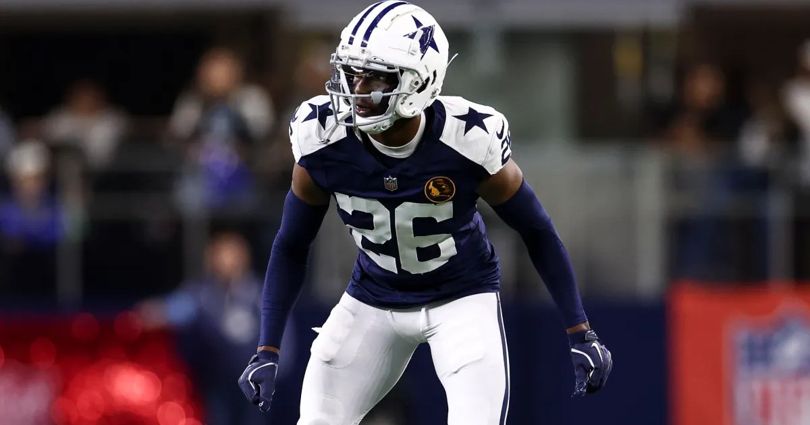

Cowboys put All-Pro DaRon Bland on IR — his season could be over
The Cowboys placed former All-Pro cornerback DaRon Bland on injured reserve Saturday with a high ankle sprain — and with only one designated-to-return spot left, his season could be over.

Disclosure: this post contains affiliate links. I earn a commission on qualifying purchases.
Bland to IR
The Dallas Cowboys placed former All-Pro cornerback DaRon Bland on injured reserve on Saturday, November 21.
Bland suffered a high ankle sprain in the first quarter of the Cowboys' 46-40 loss to the San Francisco 49ers in Week 10, and he did not return. He entered that game already dealing with an ankle issue from practice that week — then hurt the other ankle on San Francisco's opening touchdown drive, when his leg got caught between an offensive lineman and the ground.
He did not practice at all this week, and Dallas had already ruled him out for Sunday's game against the Tennessee Titans before making the IR move official.
The placement guarantees an absence of at least four games, and Bland would first be eligible to return in Week 16 against Jacksonville on December 27. But the Cowboys' own site raised the possibility that he misses the remainder of the season: Dallas has only one designated-to-return spot left, and running back Tyler Goodson — recovering from a knee injury — is a strong candidate for it.
How it happened
Bland's ankle problems started before the 49ers game even kicked off. He was a game-time decision in Week 10 because of the ankle he hurt in practice, and was cleared shortly before kickoff.
It did not hold up. On the 49ers' opening drive, Bland made a tackle on Keenan Allen, then got his other ankle caught on the touchdown play that capped the drive. He was listed as questionable to return at the end of the first quarter and ruled out after halftime.
Head coach Brian Schottenheimer said the next day that Bland would "miss some time." By Friday, the Cowboys had kept him off injured reserve for the time being — then reversed course on Saturday, a day before the Titans game.
What Dallas loses
Bland has started all 10 games this season and recorded 38 tackles, but he has not intercepted a pass. It has been a down year by his own standard: over the past three seasons, he has just one pick in 29 games.
That is a long way from 2023, when Bland led the NFL with nine interceptions and returned an NFL-record five of them for touchdowns, earning first-team All-Pro and Pro Bowl honors. The fifth pick-six came on Thanksgiving against Washington, a 63-yard return that broke a record held since the early 1990s.
Dallas bet on that version of Bland. On August 31, 2025, the Cowboys signed him to a four-year, $92 million extension with $50 million guaranteed, making him one of the highest-paid cornerbacks in the league.
The injuries have not let up since. This is now his third straight injury-shortened season: he missed 10 games in 2024 with a fractured foot, then five more in 2025 with foot and shoulder issues. Overall, Bland has 15 interceptions and 275 tackles in 63 games since Dallas took him in the fifth round of the 2022 draft out of Fresno State.
A defense that keeps taking hits
Bland's absence lands on a defense that was already reeling. Days earlier, the Cowboys shifted defensive play-calling responsibilities from first-year coordinator Christian Parker to Mike Pettine, and the unit has spent the season struggling to prevent explosive plays.
In-season trade acquisition Joey Porter Jr. will continue as the Cowboys' No. 1 cornerback in Bland's absence. Dallas also elevated cornerback Derion Kendrick and running back Jashaun Corbin from the practice squad on Saturday.
The Cowboys also elected against activating safety Jalen Thompson from injured reserve, and cornerback Devin Moore — close to a return from a hip injury — was not activated either.
What it means for Dallas
The Cowboys host Tennessee on Sunday, and they will do it without their highest-paid cornerback for at least the next month — maybe the rest of the year.
Bland is 27, under contract through 2029, and three years removed from one of the great ball-hawking seasons any cornerback has ever had. The question now is whether his body lets him get back to that level, and whether Dallas can hold its secondary together while it waits to find out.
Gear up: Fanatics